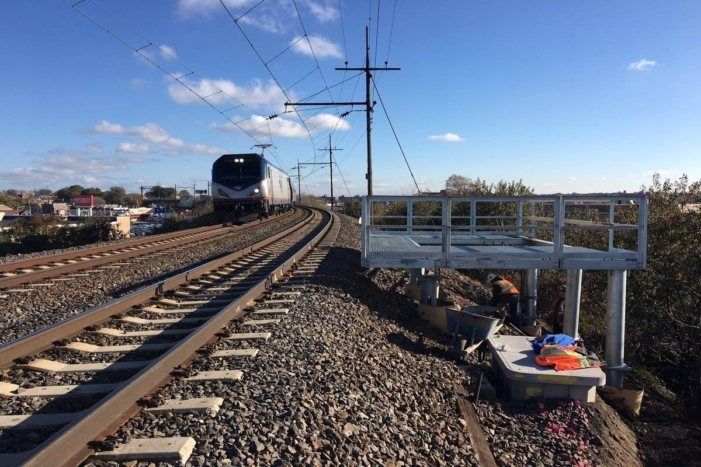

Retaining & edging
Concrete sleepers and edging that hold the level behind them. Priced after it has been looked at.
Footings, driveways and paths poured to the detail, cut and cured before anyone builds on them.
Call 0401 174 385Get a quoteLocal work done properly: driveways & crossovers and the repairs and maintenance that go with it.
Concrete sleepers and edging that hold the level behind them. Priced after it has been looked at.
Poured with the fall running to the street, broom or aggregate finish to match the house. Same people, start to finish.
Set out to the detail, steel on chairs, poured and saw-cut in the same week. Quoted on site.
Washed back evenly across the slab so the finish reads the same front to back. Explained before it starts.
Poured and paved paths on a compacted base, edged so they stay level. Done by the crew that quoted it.
Bored and formed to the plan, inspected before the pour. Priced after it has been looked at.
A job like this.

TNT Concreting is a local Bellbird NSW business. The work is driveways & crossovers, plus the maintenance and repairs that go with it — priced after the site is looked at, not before.
Levels, fall and access decided on site before anything is ordered.
Formwork, steel and a compacted base — the part nobody sees and everything depends on.
Poured, screeded, finished and cut, then left to cure under cover where it can be.
Bellbird NSW and the surrounding area.
Tell us what is needed and where. If it is urgent, call.